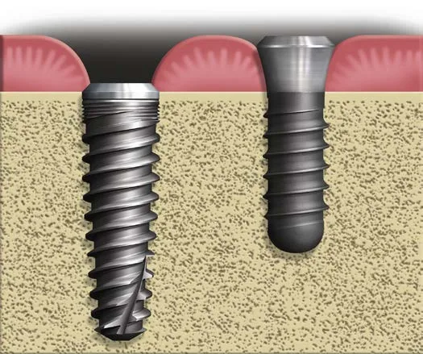

نسخه استخراجشده؛ ترجمه یا تأیید علمی انجام نشده است. وضعیت: captured
فیکسچر بدنهای است که در استخوان مینشیند. بالای آن، اباتمنت واسط میان فیکسچر و پروتز است و با پیچ اباتمنت و تورک مشخصِ کارخانه بسته میشود.
در فاصلهی جراحی تا پروتز، یکی از این دو روی فیکسچر است: کاور اسکرو که در روش دومرحلهای فیکسچر را زیر لثه مسدود میکند و اصلاً دیده نمیشود (به آن هیلینگ اسکرو هم میگویند)، یا هیلینگ اباتمنت که در روش یکمرحلهای از لثه بیرون میزند و تا آماده شدن بافت سر جایش میماند. نامهای دیگرش را هم بشناس: هیلینگ کالر، پرموکوزال اکستنشن، هیلینگ کاف.
و دو قطعه که هرگز وارد دهانِ درمان نمیشوند: ترانسفر که موقعیت فیکسچر را به قالب منتقل میکند و آنالوگ که بدل فیکسچر در کست آزمایشگاه است.
دو تقسیمبندی که در انتخاب سیستم مدام با آنها روبهرو میشوی:
یکتکه در برابر دوتکه. در ایمپلنت یکتکه، بدنه و اباتمنت یک قطعهی واحدند؛ نه میکروگپی هست و نه پیچی که شل شود، ولی انعطاف پروتزی و امکان دفن کردن هم نداری. ایمپلنتهای زیرکونیا در ابتدا فقط یکتکه بودند و نسلهای دوتکهشان بعداً آمدند.
سطح استخوان در برابر سطح بافت. بیشتر ایمپلنتهای ریشهای bone-level اند: کالرشان در حد کرست استخوان یا نزدیک آن مینشیند. در tissue-level، کالر تا نزدیکی حاشیهی بافت نرم بالا میآید — یعنی محل اتصال اباتمنت از استخوان دورتر است.
نوع اتصال و پلتفرم. در هگز خارجیِ سنتی، اباتمنتِ همقطر با کالر روی آن مینشیند (platform matched یا اتصال لببهلب)؛ بار جانبی بیشتری به پیچ میرسد و تنها چیزی که در برابر نیروی اکلوزال میایستد پیشبار خود پیچ است — برای همین شل شدن پیچ در آن شایعتر است.
در اتصالهای داخلی، بهویژه مخروطی، دیوارههای اتصال بخشی از بار را میگیرند و میشود اباتمنت را باریکتر از ایمپلنت گذاشت: این آرایش پلتفرم سوییچینگ است که میکروگپ را از لبهی استخوان دور میکند، تحلیل استخوان را کم میکند و جای بیشتری برای بافت نرم میگذارد.
